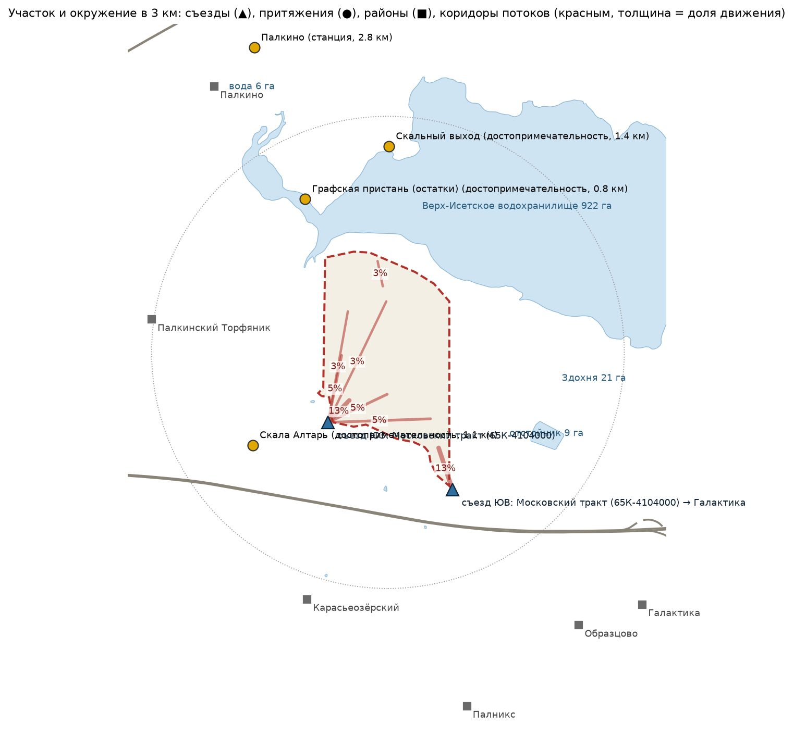
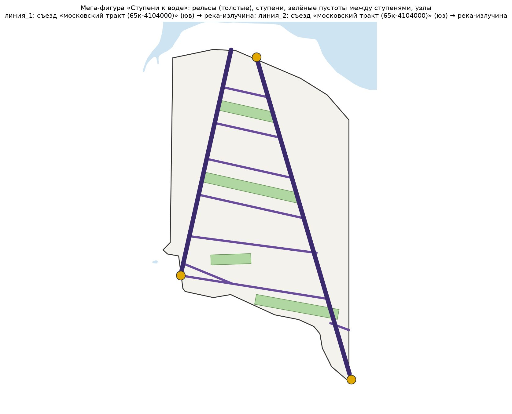
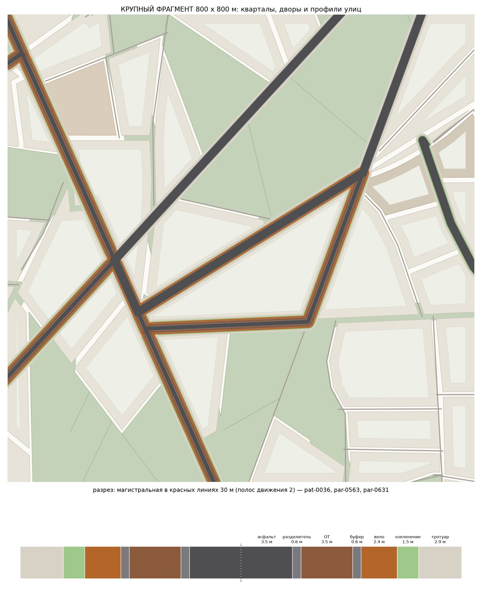
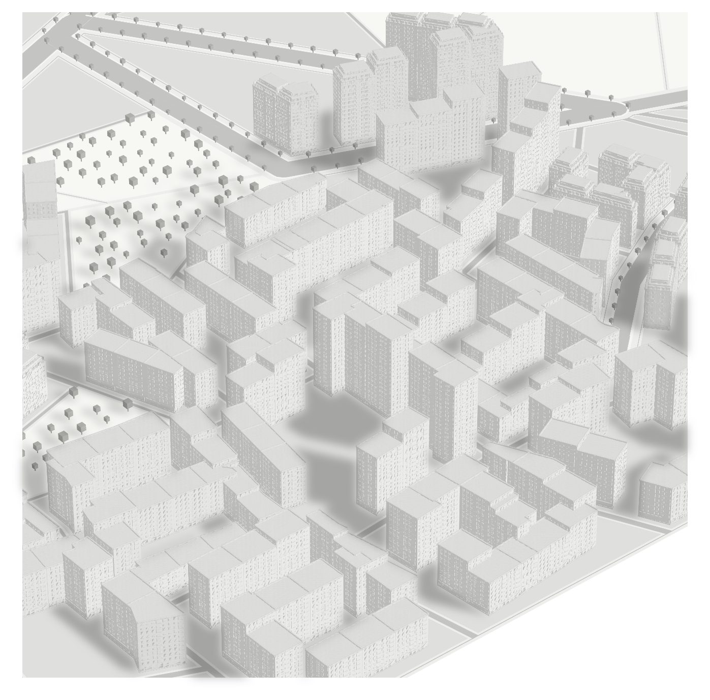
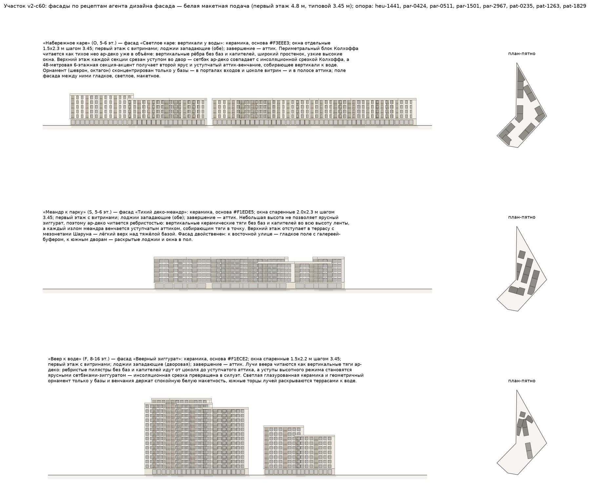
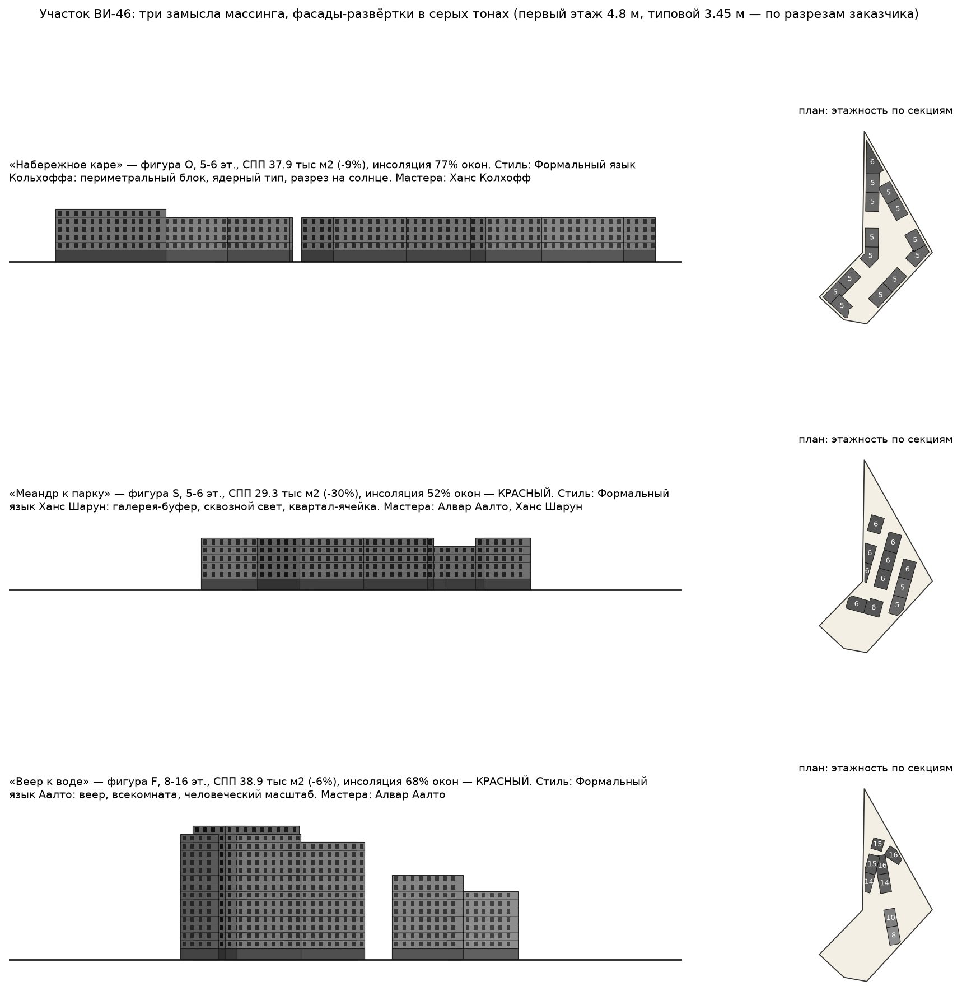
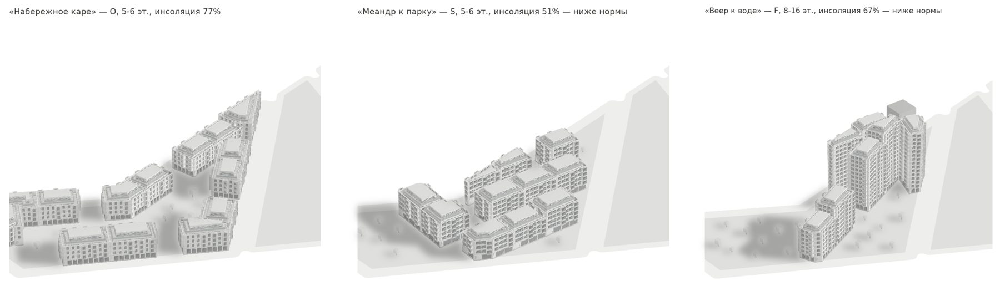
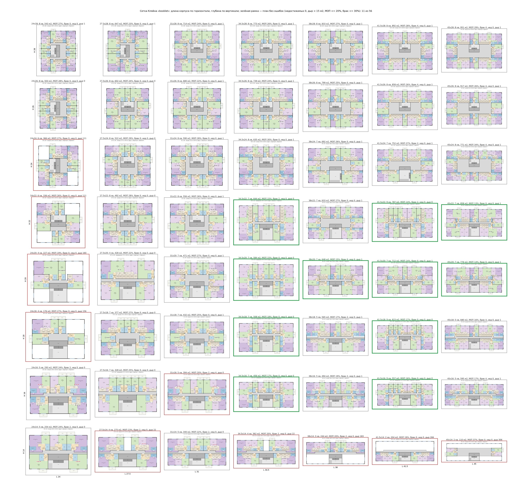
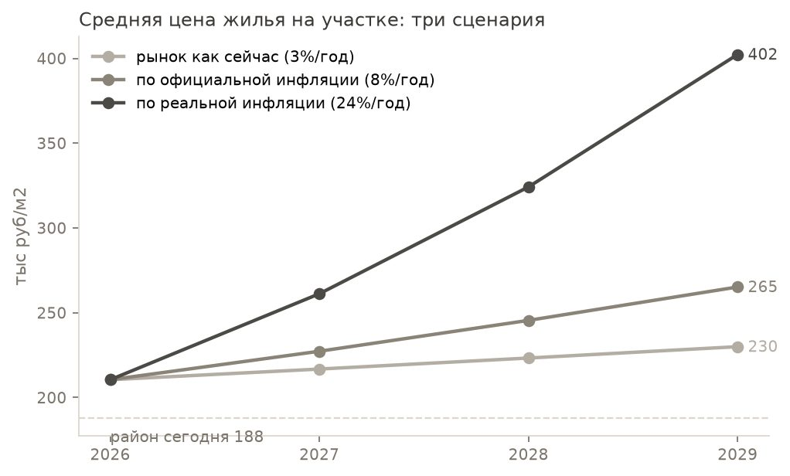

Идея
Концептуальная стадия проектирования жилого района — это тысячи решений, которые опытный архитектор принимает «в голове»: где главные улицы, какой квартал, как раскрыть двор к солнцу, что положить в первые этажи. Я собираю систему, в которой эти решения принимает машина, но так, как их принимает человек: сначала замысел, потом форма, потом проверка нормой, потом точечная правка с сохранением замысла. Каждое решение записывается в журнал с родословной — карточками знаний, на которые оно опиралось.
Метод: три слоя, одна база знаний, ноль облаков
1. Геометрическое ядро — детерминированное
- окружение в 3 км: сопряжения, притяжения, вода, гравитационная модель потоков
- словарь мега-фигур территории: хребет, гребёнка, лестница, пальцы, ожерелье
- районы → улицы с профилями → кварталы → поле высот → массинг
- инсоляция каждого окна с реальными соседями, пожарные разрывы
- 349 га → 96 кварталов → ~92 тыс. квартир за один прогон
Без языковых моделей: один вход — один результат. Каждый шаг воспроизводим и проверяем.
2. Нормы как код
- СП 42, 54, 59, 4, 1, 113, 396; СанПиН 1.2.3685; ГОСТ Р 57795; ПЗЗ; РНГП — переведены в исполняемые правила
- норма убивает вариант, правило ставит диагноз: какая норма, где и в какую сторону лечится
- «светофор» нормоконтроля по каждому кварталу
- региональные нормы подключаются отдельным модулем
Нормоконтроль происходит до того, как вариант увидит человек, — а не после экспертизы.
3. Агент-планировщик — предлагает, но не рисует
- 12 ролей: мега-фигура, замысел, зонирование, дизайн, фасад, планировки, жюри карт, жюри рендеров, экономика, инфляция, рынок, буклет
- три именованных замысла на территорию: ось, ткань, фронт, ядро, парк, доминанта
- координат не выдаёт — геометрию строит ядро; критик судит до нормоконтроля, жюри смотрит карты глазами
- у каждого решения — родословная: карточки, на которые оно опиралось
Любая модель через OpenAI-совместимый API — Kimi, Qwen, GigaChat, локальный vLLM. Работает в защищённом контуре заказчика: данные не покидают периметр.
База знаний — насмотренность, а не каталог
- 14 268 карточек: 4 364 паттерна, 3 256 эвристик, 3 223 параметра, 2 125 прецедентов, 1 268 методов, 32 стиля
- 51 799 связей: карточки ссылаются на прецеденты, прецеденты — на нормы
- 26 книг: Leupen, Schneider, Sherwood, Metric Handbook, Нойферт, Space Syntax, Spacematrix, DASH, Gehl, Sim, Urban Design Compendium, TOD Standard…
- 27 стандартов и норм: СП, СанПиН, ГОСТ, Стандарт ДОМ.РФ
- 32 стиля: 22 мастера (Сиза, Diener & Diener, MVRDV, Baumschlager Eberle, Chipperfield, Herzog & de Meuron…) и 10 направлений
Каждая карточка — со ссылкой на источник и страницу. Карточка штрафует, норма убивает. База растёт с каждым прогоном.
Что уже умеет — на живом участке
Заказчиком задан участок площадью 348,9 га на юго-западном берегу Верх-Исетского водохранилища в Екатеринбурге и целевая программа застройки суммарно 7 974,4 тыс. м²: жильё — 6 349,0, офисы — 597,4, социальные объекты — 433,5, паркинги — 273,4, торговля — 214,6, гостиницы — 94,1, инженерные сооружения — 2,0, прочие функции — 10,4 тыс. м². Отдельное указание касалось архитектуры: работать в современных стилях и в языке признанных мастеров по заданному реестру. Всё остальное — распределение объёмов по территории, типологию застройки, высотность, структуру кварталов и общественных пространств — проект решал самостоятельно.
- Окружение и потоки. Сопряжения с городом, притяжения, вода; грубая гравитационная модель поездок — главные коридоры держат 49% движения.
- Мега-фигура. Словарь фигур территории (хребет, гребёнка, лестница, пальцы, ожерелье…) собирается на якорях места; агент предлагает, ядро строит и меряет по потокам, жюри выбирает.
- Три замысла до карты. Каждый — именованный, с идеей и опорой на карточки; исполняется ядром в районы, улицы с профилями (асфальт, общественный транспорт, вело, тротуар), кварталы, зелёные цепи, поле высот.
- Массинг каждого квартала. Фигура (каре, подкова, гребёнка…), стиль мастера, этажность; инсоляция всех окон с реальными соседями; пожарные разрывы.
- Квартирография. Солвер по графу зависимостей, измеренному на 117 чертежах; проверка сеткой Кляйна — семейством корпусов по ширине и глубине.
- Экономика. Прогноз цены на участке, себестоимость от данных заказчика с реальной инфляцией, экономический гейт — программа выводится в плюс до фигуры и массинга; паркинг по норме, фазы, поток по кварталам.

Мега-фигура
- «Ступени к воде» (лестница) — жюри 8/10, держит 49% из 49% потоков. Ванкувер, Coal Harbour/Yaletown — ступенчатый силуэт к воде с регламентом видовых коридоров (View Protection Guidelines); остриё клина на берегу — как зелёные прорези Хаммарбю
- «Зелёные зубья водохранилища» (гребёнка) — жюри 6/10, держит 46% из 49% потоков. «План пяти пальцев» Копенгагена (1947) в инверсии — пальцами становится зелень от воды; второй слой — гребёнка Хаммарбю Шёстад, где рёбра ткани спускаются к бухте, а зелёные клинья входят между ними
- «Гребёнка к Исети: хребет на тракте, рёбра к воде» (гребёнка) — жюри 5/10, держит 46% из 49% потоков. Хаммарбю-Шёстад (Стокгольм): спина-бульвар с зелёными клиньями к бухте; по духу — та же звезда, но развёрнутая веером на берег

Три замысла
v1 «Исетская гребёнка»
Новый городской край между Московским трактом и Верх-Исетским водохранилищем: деловой хребет-улица вдоль тракта (части 7–8) и жилые рёбра периметральных кварталов, которые ломаными линиями — не линейкой — текут к набережной. Торговля растворена в активных первых этажах улиц, отдельного ТРЦ нет; зелень — узкие линейные скверы между рёбрами плюс парк-сердце в центральной части 9. Силуэт — градиент вдоль каждого ребра: низкая кромка 5–7 эт. у воды → тело 9–12 → деловой хребет → одна кульминация 25 эт. на тракте.
Сильное: Рисунок читается: рёбра-диагонали тянутся к воде, застройка распределена по всей территории, а не сбита в один ком; ROI 28% рабочий.
Слабое: Тело 12 этажей и узлы до 23 — вдвое-втрое выше цели 5-7. Зелёные рёбра — не сеть, а осколки: 17 касаний углом, цепь рвётся. Парки 114 га при норме 127 — недобор, хотя открытых пространств 42%: земля уходит в безымянные «три слоя» и треугольные огрызки участков вдоль диагоналей, не в дома и не в нормативный парк.
v2 «Зелёные зубья: гребёнка наоборот»
Пустырь между водохранилищем и Московским трактом зарастает гребёнкой: зелёные зубья тянутся с набережной на юг почти до тракта, жилые рёбра стоят между ними короткой стороной к парку — каждая квартира в 100–150 м от зелени. Дело собрано хребтом вдоль существующих фронтов тракта с доминантой у главного съезда; торговля идёт лентой за пешеходом, отдельного ТРЦ нет. Силуэт: низкий берег — зелёные прорези — гребни 16 эт. — башня-шестерёнка на тракте.
Сильное: Больше всего земли под дома — 161 га, парки 125 га почти по норме без отъёма у жилья, тело 10 этажей и узлы 20 — самые низкие из трёх. На карте — самая сплошная ткань: широкие ковры застройки на западе и востоке, зелень собрана в немногие крупные клинья, которые реально соединены (7 касаний углом), а не рассыпаны.
Слабое: ROI 21% — самый низкий. Зубья — это барьеры: 43% зелени в линиях длиннее 300 м режут город на сектора, пешие связи через клинья редки. 88% покрытия тремя слоями — есть пустоты обслуживания. Западная часть ткани близка к машинной решётке. 10 этажей всё равно выше цели 5-7.
v3 «Исетская гребёнка»
Новый городской край между Московским трактом и Верх-Исетским водохранилищем: деловой хребет-улица вдоль тракта (части 7–8) и жилые рёбра периметральных кварталов, которые ломаными линиями — не линейкой — текут к набережной. Торговля растворена в активных первых этажах улиц, отдельного ТРЦ нет; зелень — узкие линейные скверы между рёбрами плюс парк-сердце в центральной части 9. Силуэт — градиент вдоль каждого ребра: низкая кромка 5–7 эт. у воды → тело 9–12 → деловой хребет → одна кульминация 25 эт. на тракте.
Сильное: Лучший ROI 35%, рёбра к Исети читаются, зелёная сеть связнее, чем в первом (9 касаний углом против 17), деловой земли больше — 19 га.
Слабое: Парки 108 га при норме 127 — худший недобор, 19 га долга жителям, при этом открытых 41%: земля снова уходит в неучтённые слои. Тело 11 этажей, узлы до 23 — выше цели. Застройка лежит полосами между рёбрами, у диагоналей — треугольные дыры и клочки, равномерного ковра нет.



Мастер-план в числах


Объём одного участка



Планировки: этаж режется по графу
Корпуса одного участка разрезаны на квартиры солвером по графу зависимостей, измеренному на чертежах типовых этажей: порядок вдоль фронта от стояка, окна как отрезки фасада (тем же шагом, что на фасадах 3D), служебная полоса, коридор, двери только из прихожей и коридора.
Сетка Кляйна
Каждая клетка — корпус своей длины и глубины, нарезанный на квартиры и измеренный: число квартир, брак, недостижимые помещения, дыры, доля общих зон. Зелёная рамка — план без ошибок. Так видно, на каких корпусах солвер уже надёжен, а где нет.

Экономика
Средняя цена жилья на участке сегодня ≈ 210 тыс руб/м2 (район 188 тыс + 12% за воду и среду); через 3 года: 230 / 265 / 402 тыс по трём сценариям.

Средняя цена жилья на участке ≈ 210 тыс руб/м2 (188 тыс по району плюс 12% за воду и среду); через три года — 230, 265 или 402 тыс по трём сценариям. Себестоимость — по данным заказчика: жильё 116 276 руб/м2 при нормативе 108 335; реальная инфляция принята 24,1% в год. Программа заказчика как есть давала минус 1,3% маржи. Гейт довёл её до цели в четыре хода: цена жилья +15% к прогнозу (242 тыс руб/м2), продажа 80% подземных машиномест по 1,2 млн, половина школ и садов за счёт бюджета, этажность +30% на той же земле (~14,6 этажа). Итог: маржа 20,5%, прибыль 357,8 млрд руб, 8,5 года, четыре очереди. Для инвестора: проект прибылен только при выполнении всех четырёх условий.
- программа заказчика как есть — маржа -1.3%
- цена продажи жилья +5% к прогнозу участка (221 тыс руб/м2): позиционирование выше рынка — вода, среда, стили мастеров — маржа 2.9%
- цена продажи жилья +10% к прогнозу участка (232 тыс руб/м2): позиционирование выше рынка — вода, среда, стили мастеров — маржа 6.8%
- цена продажи жилья +15% к прогнозу участка (242 тыс руб/м2): позиционирование выше рынка — вода, среда, стили мастеров — маржа 10.3%
- подземные машиноместа продаются (80% мест по 1.2 млн) — маржа 13.9%
- школы и сады на 50% по программам бюджета (КРТ, нацпроекты) — маржа 17.3%
- этажность жилья +10% на той же земле (тело ~12.1 эт.) — маржа 18.5%
- этажность жилья +20% на той же земле (тело ~13.3 эт.) — маржа 19.5%
- этажность жилья +30% на той же земле (тело ~14.6 эт.) — маржа 20.5%

Честные ограничения
- Региональных нормативов Свердловской области в базе нет; соответствие проверяется по общим требованиям, региональную специфику подтверждает проектировщик.
- На глубоких плитах тип квартиры не всегда удерживается, доля МОП вырастает до 24–30%; такие планировки требуют ручной доработки.
- Трёхкомнатных квартир в массинге 820 из 69083; автоматическая перебалансировка типового состава под спрос не реализована.
- Этажность 10 при целевых 5–7 фиксируется как отклонение; снизить её без потери жилой площади система не умеет.
- 43% зелени собрано в линии длиннее 300 м; такие клинья режут ткань на сектора, система помечает барьеры, но пешие связи не прокладывает.
- Покрытие тремя слоями — 88%; пустоты обслуживания обнаружены и показаны, автоматически не закрываются.
- Средняя инсоляция 37%, средний отклик СПП -13%; оба показателя зафиксированы, методика их улучшения не встроена.
Об авторе

Вадим Степанов — специалист по цифровым технологиям в строительстве: информационное моделирование, цифровые двойники, автоматизация проектирования. Эксперт НИИСФ РААСН и технического комитета Минстроя по информационному моделированию. Пятнадцать лет строит цифровые модели реальных объектов. «Архитектор в машине» — его личное исследование: что происходит, когда опыт проектировщика переносят в машинную систему.
Полная биография — на публичной странице автора в библиотеке НИИСФ РААСН
Как присоединиться
Ищу тестировщиков и соавторов. Полезнее всего сейчас: (1) участки с программой, на которых можно прогнать систему и разобрать результат глазами; (2) архитекторы, готовые критиковать замыслы и планировки — каждое замечание становится карточкой или правилом; (3) данные по себестоимости и рынку регионов; (4) разработчики геометрических солверов.
Система работает на self-hosted моделях: данные заказчика не покидают его контур. Полный буклет прогона (PDF) — все карты, таблицы по участкам, финмодель и список допущений.
Написать: v.stepanov.aec@gmail.com · Telegram @Vadim_Stepanov_AEC · +7 903 250-76-09